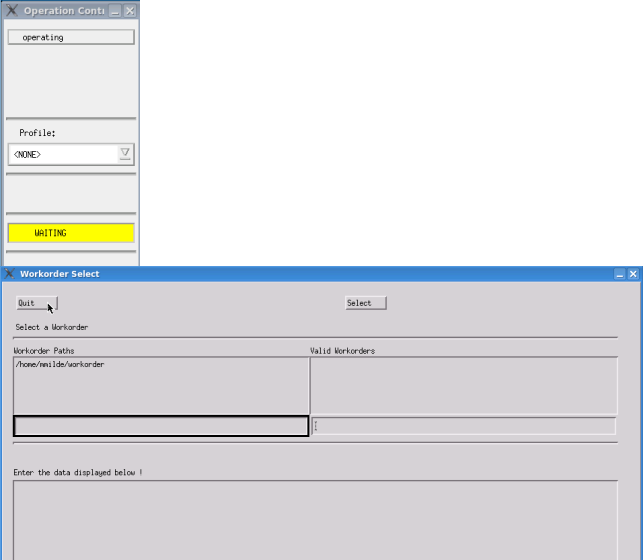

Starting SmarTest with operator mode
With operator status you focus on the execution of workorders, which have previously been set up. But you have no access to the test program development functions of SmarTest.
To start SmarTest with operator mode open a terminal and type:
HPSmarTest -O or,
HPSmarTest -Oo if you are running the software offline (that is, the tester is not connected).
The screens shown below appear.

In order to change the user mode of SmarTest, click the button operating in the Operation control window (figure above), and chose the new desired mode.
In order to exit SmarTest completely, click Quit in the Workorder select window.